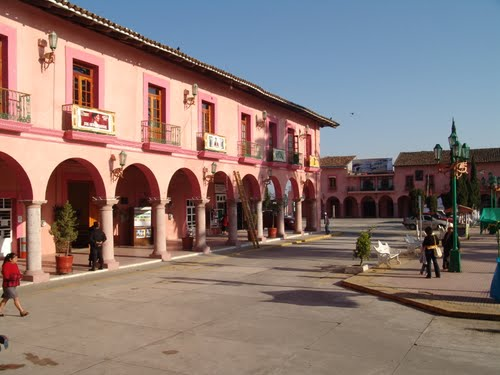
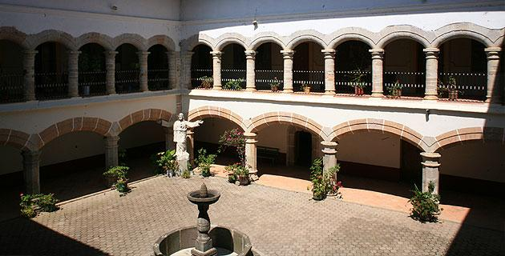
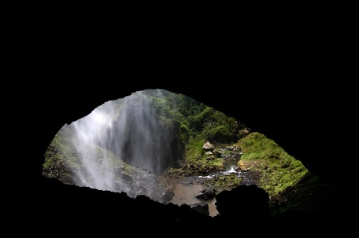
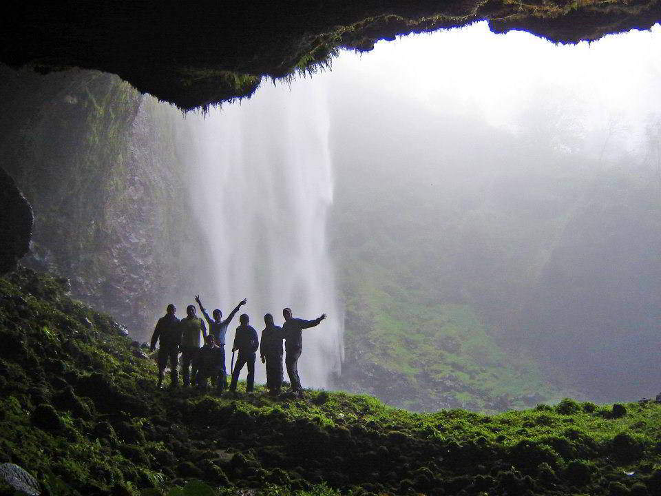
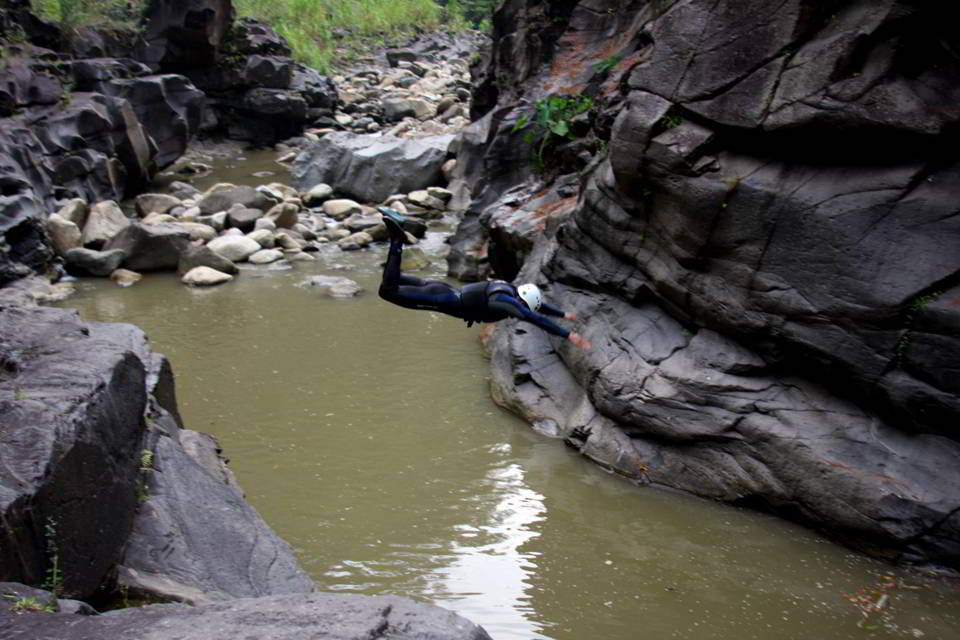

Sitios interesantes

El Palacio Municipal de Tlatlauquitepec, fue
construido en la década de 1800, siendo propiedad del
señor Don Ambrosio Luna. En 1872, se estableció en la
construcción, el primer hospital fundado por el Cura
Lauro María de Bocarando. Finalmente, En 1890 se
convirtió en el actual palacio municipal.

El ex convento franciscano fue construido en el año
de 1531 por la orden franciscana, el techo de teja de 4
aguas se divide en tres cuerpos, contiene 32 arcos
labrados en cantera rosa, extraída del municipio de
Chignautla. En las puertas principales se puede observar
el estilo gótico con ornamentación franciscana y tiene un
típico patio español con una fuente en el centro de
aproximadamente 40 años; labrada con la piedra que
elaboran los metates. Se encuentra abierto todos los días
de 9:00 a 14:00 horas y de 16:00 a 18:00 horas.

La Plaza de armas de Tlatlauquitepec, se encuentra
rodeada de portales con una gran variedad de árboles y
flores de la región, además de la magnífica vista que se
tiene del Cerro Cabezón. Históricamente, el lugar tiene
un valor muy peculiar, puesto que aquí fue donde se llevó
a cabo la primera manifestación ante la ley de catastro el
19 de Septiembre 1938, siendo Tlatlauquitepec el único
municipio en hacerlo.

En el Santuario, se venera una hermosa escultura de
Jesús Crucificado "Señor de Huaxtla". Su construcción
data de 1701, cuando el cura Domingo Martin Fonseca
mandó construir la primera capilla, que era una casita de
madera con zacate. En 1822 se puso ladrillo en el presbítero y se le coloca una campana en 1826. Para el
año de 1846, se le coloca su nicho, se le pone vidriera, se
coloca el púlpito y los altares laterales.

El cerro cabezón, que ofrece un impresionante
paisaje constituido por acantilados y una vegetación
siempre verde de pinos y oyameles, es un monolito de
roca caliza que contiene numerosas cuevas y por el
efecto de la filtración del agua se conforman las
estalactitas y estalagmitas las cuales ofrecen un
espectáculo artístico natural. Hoy en día, en el cerro se
encuentra una tirolesa de medio kilómetro de longitud,
miradores escénicos, puentes colgantes, plataformas en
árboles y además se puede practicar senderismo,
campismo, rappel, espeleología, ciclismo de montaña y
escalada.

La Cueva del Tigre cuenta con una entrada en forma
de bóveda y en el fondo podemos encontrar accesos de
gran dimensión. En su interior se observan formaciones
de estalactitas y estalagmitas, además de impresionantes
formaciones de cristales y un poco de fauna endémica.

La cascada tiene una caída
impresionante de 70 metros de
altura aproximadamente, en el
lugar se puede apreciar la hermosa
vegetación y un paraje casi virgen.

Es una formación natural
perfecto para internarse a la
aventura, existe un recorrido que
comienza con el descenso en las
escalinatas por la cortina de la
presa, la cual tiene un muro de 96
metros de altura, aunque no
existen riesgos, el solo asomarse al
vacío que forma esta gran pared,
causa una vista impresionante.